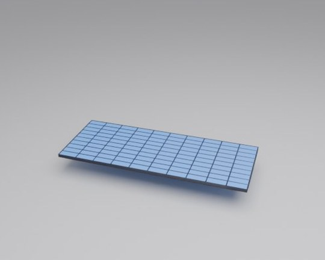
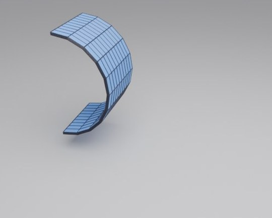

Bonus lesson
Warp
Warp takes the selected geometry and wraps it around the 3D cursor by an angle you choose. It works in Edit Mode. Find it under Transform › Warp in the Mesh menu. The manual lists no shortcut for it.


How it works
Warp always depends on where the 3D cursor is. The Pivot Point is not used. The result also depends on your current view, so the same warp looks different from the front, the side or a free view.
The Warp radius depends on how far the cursor is from the selected elements. The further away the cursor, the larger the radius. The manual shows a plane warped by 90, 180 and 360 degrees.
To warp text, first convert it from a text object to a mesh with Convert. The manual's own example wraps text around a logo this way.
Read the manual page on Warp.
Try it
This exercise is our own suggestion and has not been run step by step in the GUI. Add a plane, enter Edit Mode, scale it long and subdivide it a few times. Place the 3D cursor away from the plane, select everything and choose Transform, then Warp from the Mesh menu. Move the mouse to change the angle, then click. Try it again from a different view and compare. Use Ctrl+Z to undo.